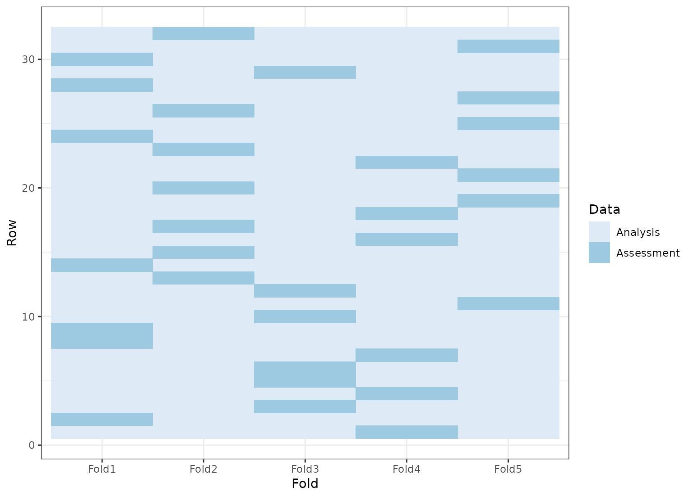
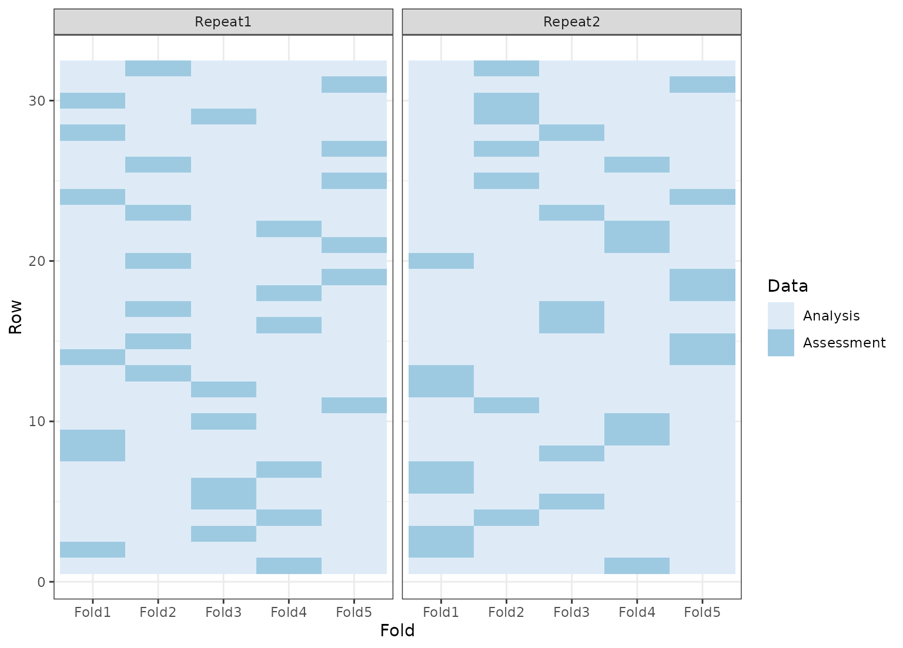
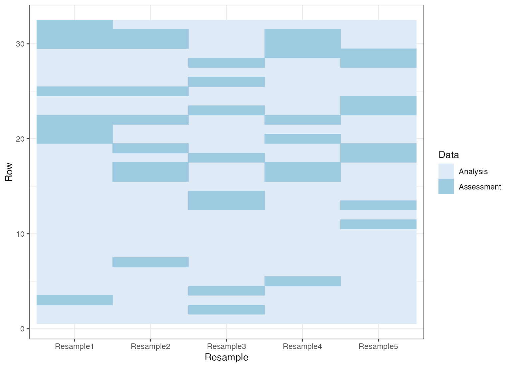
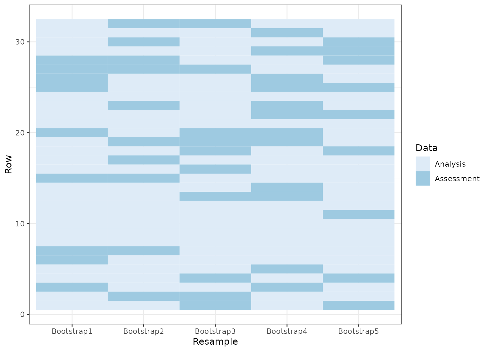
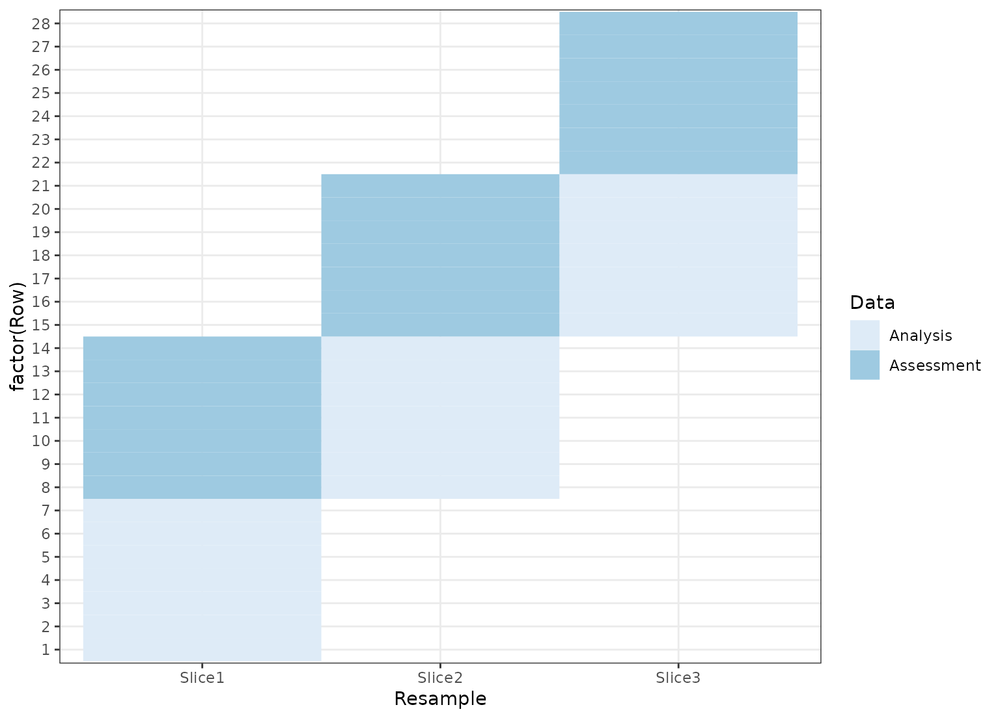

The tidy() function from the broom package can be used on rset and
rsplit objects to generate tibbles with which rows are in the analysis and
assessment sets.
Value
A tibble with columns Row and Data. The latter has possible
values "Analysis" or "Assessment". For rset inputs, identification
columns are also returned but their names and values depend on the type of
resampling. For vfold_cv(), contains a column "Fold" and, if repeats are
used, another called "Repeats". bootstraps() and mc_cv() use the column
"Resample".
Details
Note that for nested resampling, the rows of the inner resample,
named inner_Row, are relative row indices and do not correspond to the
rows in the original data set.
Examples
library(ggplot2)
theme_set(theme_bw())
set.seed(4121)
cv <- tidy(vfold_cv(mtcars, v = 5))
ggplot(cv, aes(x = Fold, y = Row, fill = Data)) +
geom_tile() +
scale_fill_brewer()

set.seed(4121)
rcv <- tidy(vfold_cv(mtcars, v = 5, repeats = 2))
ggplot(rcv, aes(x = Fold, y = Row, fill = Data)) +
geom_tile() +
facet_wrap(~Repeat) +
scale_fill_brewer()

set.seed(4121)
mccv <- tidy(mc_cv(mtcars, times = 5))
ggplot(mccv, aes(x = Resample, y = Row, fill = Data)) +
geom_tile() +
scale_fill_brewer()

set.seed(4121)
bt <- tidy(bootstraps(mtcars, time = 5))
ggplot(bt, aes(x = Resample, y = Row, fill = Data)) +
geom_tile() +
scale_fill_brewer()

dat <- data.frame(day = 1:30)
# Resample by week instead of day
ts_cv <- rolling_origin(dat,
initial = 7, assess = 7,
skip = 6, cumulative = FALSE
)
ts_cv <- tidy(ts_cv)
ggplot(ts_cv, aes(x = Resample, y = factor(Row), fill = Data)) +
geom_tile() +
scale_fill_brewer()
